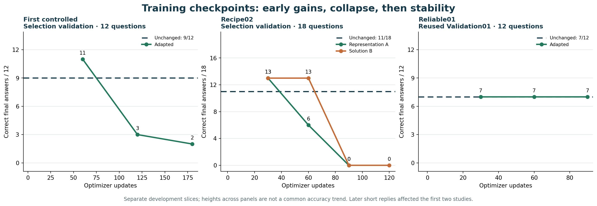

Small AI models for JEE problems
This project tests whether small AI models can solve questions from JEE Main and Advanced, India’s engineering entrance exams. This page lets you run saved models in your browser and read the results of our training experiments.
The 9B model and five saved training versions run in the browser. Training has not yet shown a reliable improvement in JEE solving. Image answers remain unreliable, and phone support has not been verified.
To try a model, choose one below and check its download size before loading it. To understand the project first, read the results.
Run a question
Choose and load a model, then enter a question. Model files download from Hugging Face; your question is processed on this device.
2. Load it on this device
The model runs in this browser using WebGPU, which gives it access to your device’s graphics processor. No account, API key or local Python server is required. Downloads may be cached by your browser.
3. Enter a question
Model response
WaitingNo response yet
Load a model and submit a question to see its answer and explanation here. Check the working yourself; an answer can be complete and still be wrong.
Model explanation
Available models
All options use Qwen3.5 models. LlamaJEE.js is the project name. “B” means billions of model parameters, not the download size.
| Option | What it is | What to expect |
|---|---|---|
| 9B unchanged base | The original compressed model, with no JEE training changes from this project. | The reference used to judge whether our training helped. |
| Five trained 9B versions | Saved training checkpoints applied to the same 9B base using small updates called adapters. | Experimental results to compare with the base. None has met our criteria for a reliably better solver. |
| Separate 0.8B demo | A smaller, unchanged model with a download of about 850 MB. | A smaller browser demonstration. It is not a compressed version of our trained 9B model. |
Download and device limits
The 9B package is up to 5.7 GB for text and adapters, plus 1.84 GB for images. Running it also needs working memory. We tested it on a Mac with 64 GiB of memory; the minimum requirement and phone support are unverified.
For the 9B models, images are resized to 384 × 384 pixels. Crop to one clear question. The model can misread even simple images.
Reading the checkpoint names
- Family
- One source question and its related teaching exercises.
- Layer
- A model block. The number shows how many blocks received training adapters.
- Step
- One training update. Step 60 means 60 updates, not 60 questions.
These five versions preserve selected experiments. They do not include every historical training step.
What the solver checks
The harness is the code around the model. It prepares the request, displays the response and performs a few limited checks.
- Prepare the question. The request includes your subject and answer-format choices, with guidance for conventions such as thermodynamics signs.
- Ask for a worked solution. The model is asked to state the given information, a plan, calculations, checks and a final answer. These are requested sections, not proof of correct reasoning.
- Check the response. The page checks the answer format and separately calculates one simple constant-acceleration problem pattern. It does not verify general mathematics or science.
Technical details
The 9B models use a custom ONNX Runtime WebGPU implementation with the Transformers.js tokenizer. The 0.8B demo uses Transformers.js. Model execution happens on the visitor’s device; it is not sent to an inference server.
Results and project history
The aim is a reliable solver that can run on smaller devices. The work so far has established a training and browser-deployment process; reliable JEE improvement remains unproven.
What we learned from 9B training
Some early checkpoints scored higher on small development sets. Further training sometimes reduced accuracy or produced incomplete answers. Later runs were more stable, but no trained version met all of our criteria for improvement.
One archived 16-layer version answered 8 of 12 development questions correctly, compared with 7 of 12 for the unchanged base. Its procedure score fell from 17/24 to 14/24. That trade-off did not establish a better solver.


What the browser release established
The conversion matched original-model outputs on 18 CPU and 10 Chrome synthetic comparisons. These tests checked whether conversion preserved behaviour. They did not measure JEE accuracy, and the original model’s errors on two image tests remain.
Read the browser conversion report
Deployment history
- The public site used the separate 0.8B model. The trained 9B interface still required Python and MLX on a Mac.
- The original 9B base and five archived trained versions were published for browser execution. The public site completed a test question with the base and one trained version.